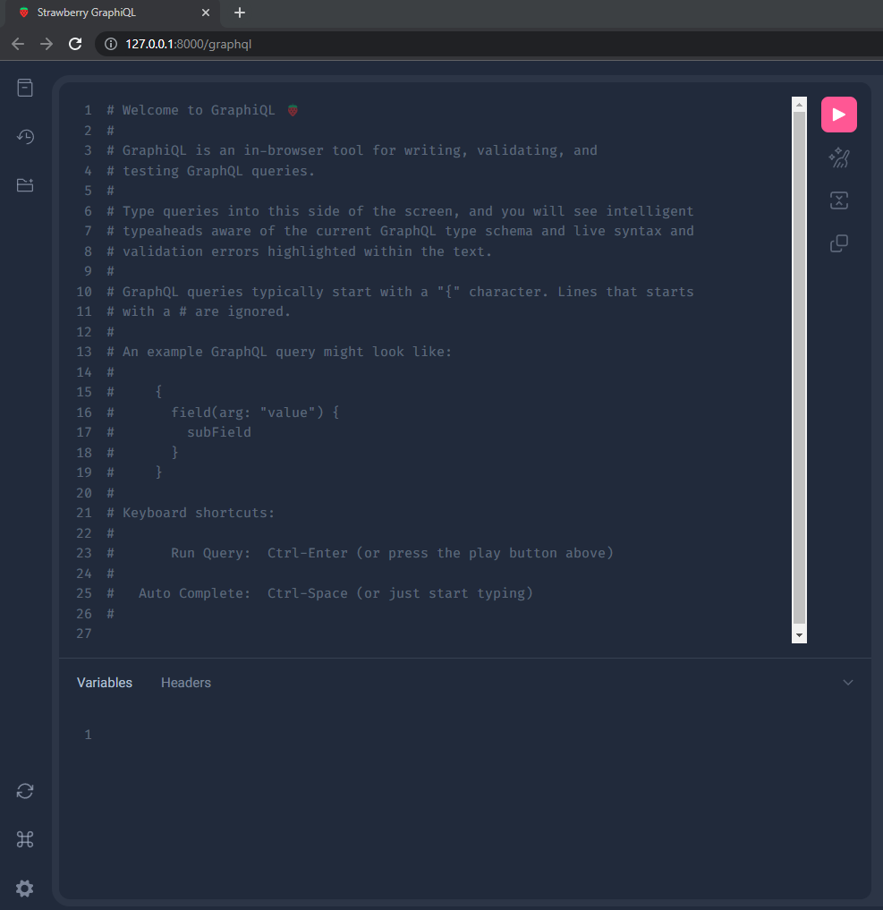
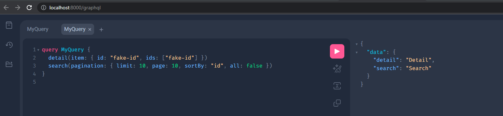

First App
Settings config/settings.py (Demo)
Installed Apps
After creating your first demo app. Add it in the applications list "INSTALLED_APPS"
config/settings.py
# -*- coding: utf-8 -*-
import pathlib
# Base Directory
BASE_DIR = pathlib.Path(__file__).parents[1]
# Installed Apps
INSTALLED_APPS = ["demo"] # (1)
- INSTALLED_APPS - Right now we control the
INSTALLED_APPSfrom here. However, depending onmodein thespoc.tomlis where you place them.
Run
Start the Server (Again). After adding your App to INSTALLED_APPS.
Then go to http://127.0.0.1:8000/graphql
GraphQL
IF its working it should look something like the image below.

Testing
Info
Copy the code below and paste it the browser's editor.
query MyQuery {
detail(item: { id: "fake-id", ids: ["fake-id"] })
search(pagination: { limit: 10, page: 10, sortBy: "id", all: false })
}

Response
Info
After running the query. The editor should return the json below